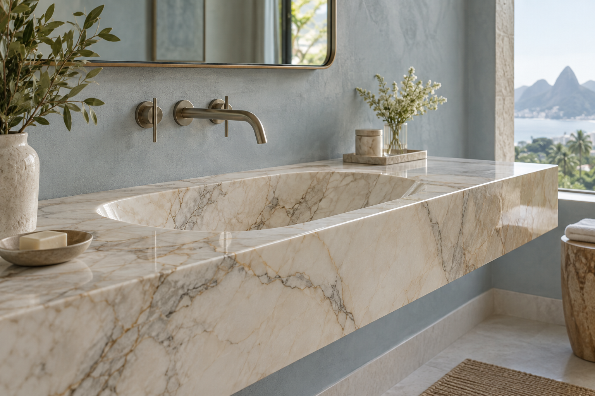
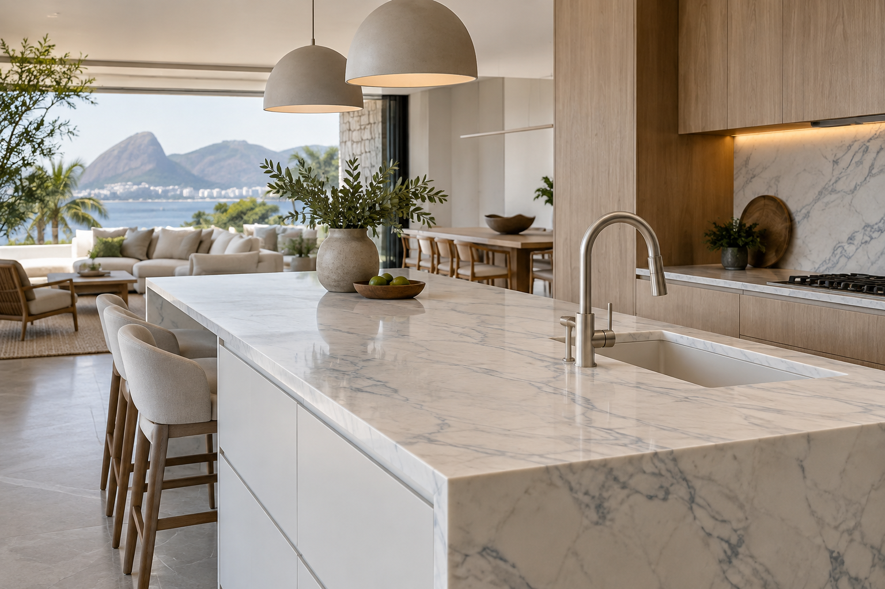
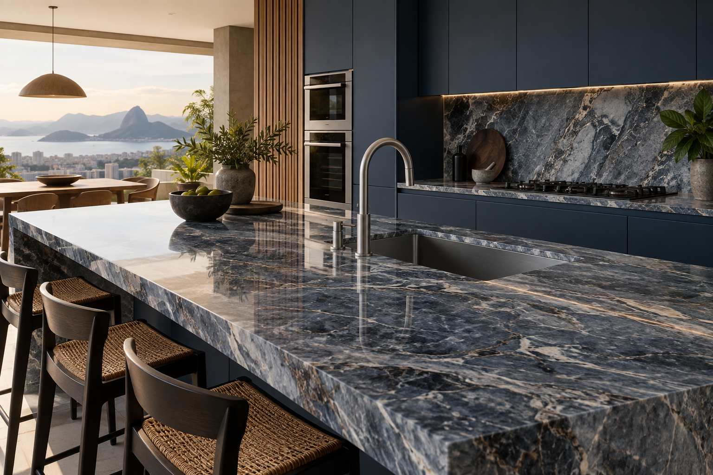

Mármores
Veios singulares e elegância atemporal para interiores cheios de personalidade.
MÁRMORES · GRANITOS · SUPERFÍCIES
Matéria-prima marcante, acabamento cuidadoso e soluções sob medida para os espaços que fazem parte da sua vida.
Vamos conversar ↗
Na Gran Pará, cada projeto começa com uma escolha: encontrar a superfície certa para o seu espaço, seu jeito de viver e a ideia que você quer tirar do papel.
Em parceria com arquitetos e designers, executamos projetos residenciais e comerciais com mármores, granitos, Silestone e acessórios.
Conheça nosso trabalho ↗Pedras com personalidade para projetos que pedem beleza, funcionalidade e presença.

Veios singulares e elegância atemporal para interiores cheios de personalidade.

Resistência e variedade natural em superfícies feitas para acompanhar a rotina.
Superfícies industrializadas e acessórios que completam o desenho do projeto.
A pedra certa não ocupa
o espaço. Ela define o espaço.
“Excelente atendimento, qualidade e de fácil acesso. Parabéns pelo atendimento.”
“Excelente atendimento e qualidade impecável 👏👏👏🙌”
“Esse é o melhor!!! Qualidade e ótimo atendimento. Recomendo! 👏👏”
“Excelente atendimento, variedade e agilidade no atendimento. Recomendo em Parauapebas.”
“Excelente empresa... Ótimos produtos e profissionais de confiança!!!”
“Muito bom, gostei do atendimento 😃”
“Ótimo atendimento, ambiente aconchegante e ótimos preços!”
“A melhor da cidade! Excelência em atendimento.”
“Marmoraria excelente! Trabalho caprichado e ótimo preço.”
“Excelente, qualidade do serviço e material de primeira.”
“Ótimo atendimento!”
“Excelente atendimento e incrível pós-venda.”
“Ótimo serviço prestado, empresa bem organizada e que trabalha com transparência.”
“Excelente 🙅🏻🙅🏻”
“Excelente atendimento.”
Cada ambiente tem uma necessidade. Cada pedra, um jeito próprio de responder.
Trabalhamos lado a lado com arquitetos, designers e clientes para transformar uma ideia em uma peça bem resolvida.
EscutaEntendemos o projeto e o que o espaço precisa.
EscolhaExploramos materiais, tons e possibilidades.
ExecuçãoLevamos o desenho para a pedra com cuidado em cada etapa.
Converse com a Gran Pará e conte o que você está imaginando.
Solicitar orçamento ↗